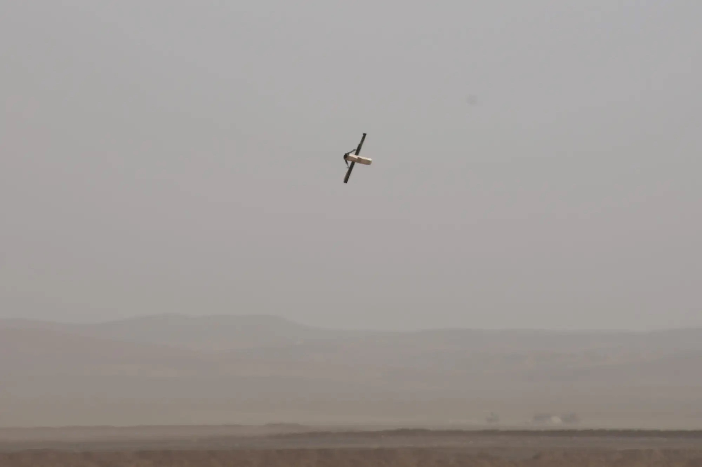
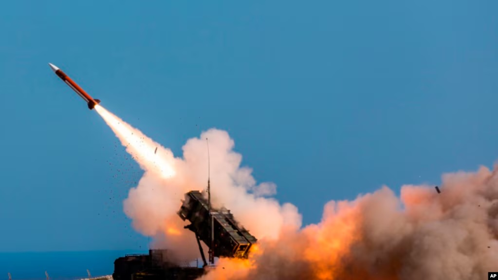
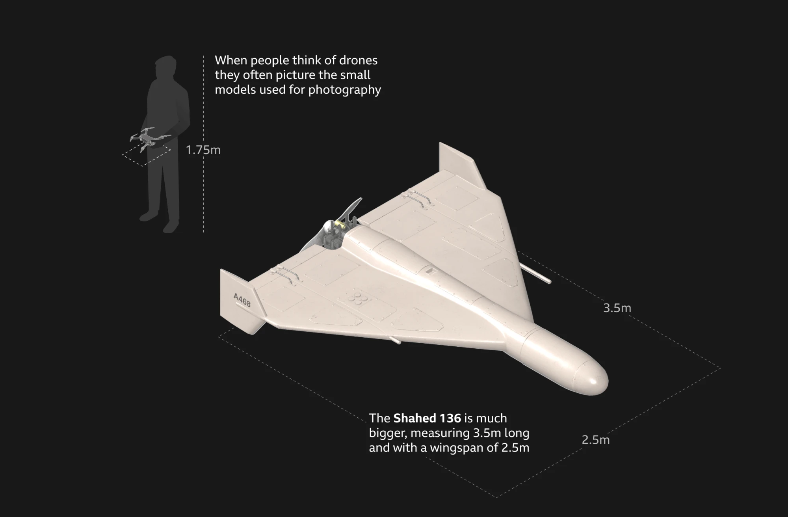
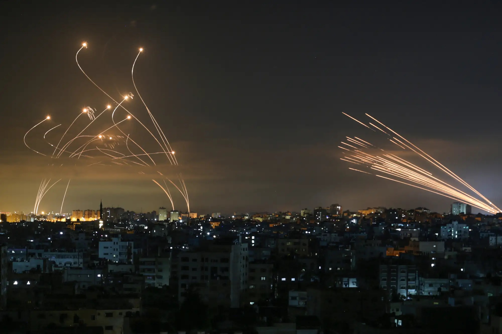
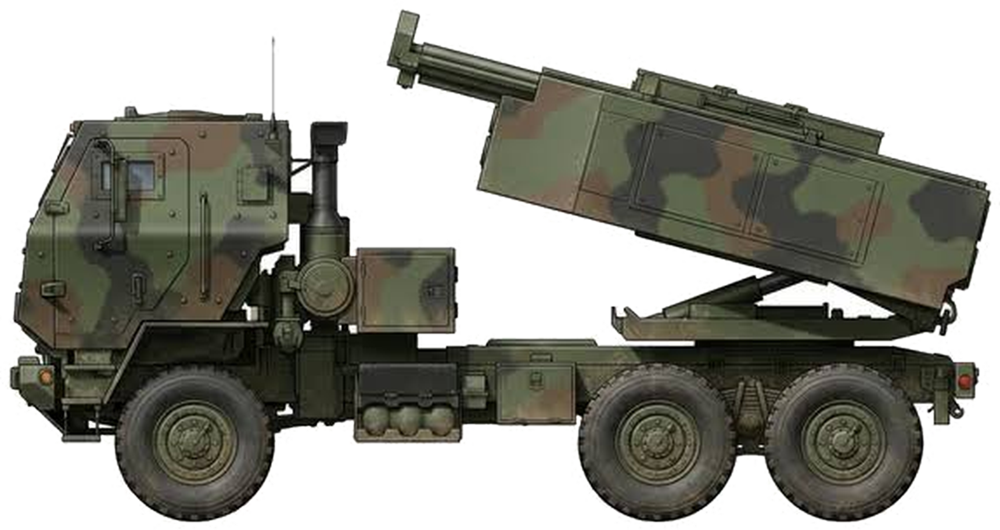
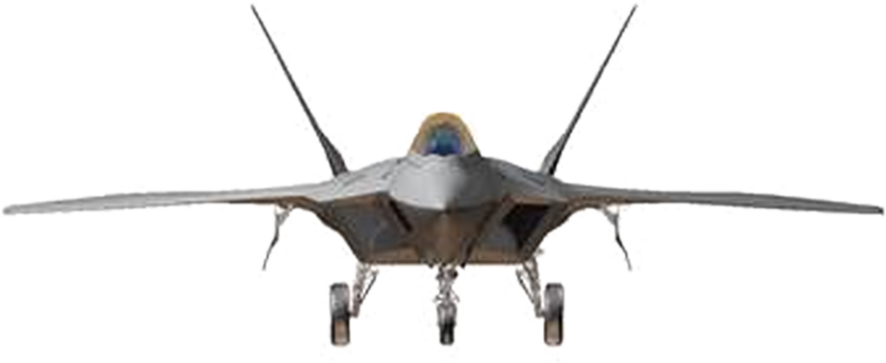
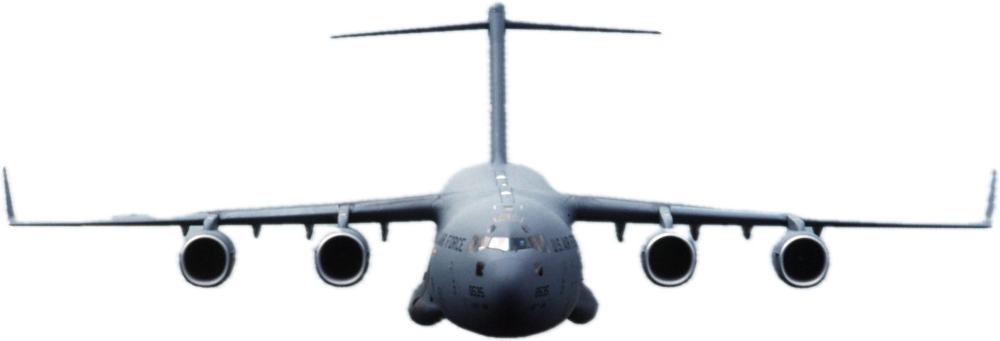

全球化的挑戰與因應｜軍工概念產業與美伊戰爭科技應用
從產品看懂訂單，從訂單看懂市場，再從市場看懂整個產業。
C113142104 王宇峻 C112142235 張天翰 ｜ 授課老師 張家熏
滾一下或按 → ，前進一步；按 ← 退回一步
飛行中的單向攻擊無人機｜圖：U.S. Department of Defense，轉引自 BBC
開場四百年前公司自己打仗；今天國家打仗，公司造武器
高中歷史學過：1624 年，荷蘭東印度公司開始在台南興建熱蘭遮城。這家公司同時握有三樣東西。
第一是軍事：它可以自己募兵、建要塞、和當地統治者締約，必要時自行作戰。
第二是市場：國家特許它獨占亞洲的貿易。
第三是企業：它是史上最早公開發行股票的公司之一。三個圓疊在一起的地方，就是它。
今天，這三樣東西分開了。打仗的權力回到國家手上，但戰爭背後的生意從來沒有消失。
成立與公開募股（1602）：World History Encyclopedia〈Dutch East India Company〉；「史上第一家」的說法學界有爭議，本頁寫作「最早之一」｜熱蘭遮城（1624 年築城，1627 年定名）：成功大學校刊、公視新聞網「跨‧1624」特展報導｜特許狀內容（獨占亞洲貿易 21 年、募兵、建要塞、締約、防禦性作戰）：UMass Dartmouth〈The VOC〉
紅・軍事一枚攔截彈的錢，可以買 82 到 205 架無人機；每打掉一架，就多一張訂單


一枚攔截彈的錢 ＝ 1 架無人機

這三個圓就是全片的目錄，右上角會一直標出現在講到哪一個。先從紅色的軍事開始：今天公司造的武器，長這樣。
這是愛國者 PAC-3 MSE 攔截彈，由洛克希德馬丁製造。
一枚大約新台幣 1.3 億元。
2026 年 2 月 28 日美國與以色列空襲伊朗之後，伊朗用這個還手。因為它便宜，所以可以大量發射。
因為守方不能不攔，所以每一架都要用一枚攔截彈去換。把兩個價錢放在同一把尺上。
用無人機最貴的價錢算，一枚攔截彈的錢可以買 82 架。
用最便宜的價錢算，是 205 架。
攔截率很高，但每攔一架，都要付一次錢。所以每打掉一架，守方就得再買一枚。
這就是一張訂單。這張訂單是誰下的？
無人機單價：BBC News（2026/3/6）｜攔截彈單價約 410 萬美元：公開報導估計值（Quwa、Defence Security Asia）｜82 與 205 為本文以美元原價計算｜1 美元約 31.9 元（央行新臺幣/美元銀行間收盤匯率 31.875，2026/10/8）｜照片：愛國者發射，U.S. Department of Defense，經 AP 發布；Shahed 尺寸圖，BBC News Visual Journalism team（2026/3/6）；夜空：以色列鐵穹系統（左）攔截哈瑪斯自加薩北部發射的火箭（右），2021 年 5 月 14 日攝於加薩上空，非本次戰爭，攝影 Anas Baba／AFP via Getty Images
黑・市場下訂單的只有國家，所以這個市場不歸看不見的手管
他追求的只是自己的利益，卻被一隻看不見的手引導，促成了並非他本意的目的。 led by an invisible hand to promote an end which was no part of his intention 亞當・斯密《國富論》第四卷第二章，1776 年
同一本書，同一章
國防比富裕重要得多。 Defence is of much more importance than opulence. 亞當・斯密《國富論》第四卷第二章，1776 年
| 一般市場 | 軍工市場 | |
|---|---|---|
| 買家 | 很多消費者與企業 | 幾乎只有政府 |
| 需求來源 | 景氣與喜好 | 威脅與國防預算 |
| 賣家 | 多，可以換一家買 | 少，常常只有一家能做 |
| 出口 | 自由買賣 | 每一筆都要政府核准 |
飛彈不會擺在超商賣。下這張訂單的，只有國家。
一般的市場怎麼運作？亞當・斯密說，每個人追求自己的利益，卻被一隻看不見的手引導。
但在同一章，他也寫了另一句：國防比富裕重要得多。
因為連提出看不見的手的人，都承認國防不能完全交給市場，所以軍工的市場長得不一樣。先看買家。
需求不看景氣和喜好，看的是威脅。
賣家很少，常常只有一家能做。
連賣給誰，都要政府點頭。所以軍工產業，就是這個例外的現代版本。
引文：Adam Smith, The Wealth of Nations, Book IV, Chapter II（第二句原文為 As defence, however, is of much more importance than opulence…）｜中文為本文翻譯；通行中譯本見謝宗林、李華夏譯《國富論》，先覺出版（卷四在《國富論 II》，2005）
黑・市場沒被攻擊也要買，因為買的是「讓對方不敢動手」
台灣沒有在打仗，2027 年度的國防預算卻首度超過 1 兆元。沒被攻擊，為什麼還要買？
因為武器買來的第一個用途不是使用，而是讓對方不敢動手。這叫威懾。
因為鄰國多買了，自己沒有跟上，平衡就會倒向一邊。
因為等到開戰才買來不及，所以要在沒事的時候先買。這個市場的需求，看的是威脅，不是景氣。
台灣 2027 年度國防預算案：中央社 Focus Taiwan（2026/8）｜天平為示意圖，方塊不代表實際數量
黑・市場有錢也不能馬上買到，因為做得出來的產能有限
每一格代表 10 枚 庫存 已用掉 一年的產量 補回來的
10 公尺 ｜ 三種裝備，同一個比例尺



開戰前，美國大約有 2,330 枚愛國者攔截彈。
開戰不到半年，用掉將近三分之二，只剩大約 800 枚。
有預算，為什麼不馬上補？因為這種飛彈只有洛克希德馬丁能做，新廠商要通過國家認證才能加入，而工廠一年只做得出大約 600 枚。
所以光是補回原本的數量，就要兩年半以上。
不只飛彈如此。武器的價錢看的是技術門檻和生產數量：F-22 原本計畫做大約 750 架，最後只買了 187 架。
庫存：CSIS 估計（2026/7/27），開戰前約 2,330 枚、現剩 759–827 枚，見 19FortyFive（2026/8/7）；「用掉將近三分之二」見 Stars and Stripes（2026/8/3）｜年產量：Reuters、The Defense Post｜兩年半為本文計算（1,530 枚 ÷ 600 枚）｜裝備圖：F-22、C-17 單價為美國空軍 Fact Sheet（C-17 為 1998 年幣值），海馬斯為 2024 年度美國陸軍採購價，數量截至 2025 年 11 月；C-17 的 279 架含外銷
黑・市場賣家只剩少數幾家，因為國家要求它們合併
1993 年冷戰結束，預算縮減。美國國防部請主要軍火商的執行長吃了一頓晚餐，告訴他們：訂單養不起這麼多家，政府鼓勵合併。
這頓飯後來被稱為「最後的晚餐」。之後諾斯洛普買下格魯曼（1994），洛克希德與馬丁瑪麗埃塔合併（1995），波音買下麥道（1997）。
美國的航太與國防主承包商，從 51 家變成 5 家。
這五家各有代表作：洛克希德馬丁的 F-35、RTX 的愛國者雷達、諾斯洛普格魯曼的 B-21、通用動力的艾布蘭戰車、波音的 F-15EX。
因為買家只有一個，所以連賣家有幾家，也是買家決定的。1961 年艾森豪卸任時，替這種關係取了名字：軍工複合體。
到這裡，可以把三個詞分清楚：企業、軍工企業、軍工產業。
因為買家是國家，所以需求、產能、賣家數量，都不由市場決定。接著跟著其中一家軍工企業，看錢怎麼流進去。
51 → 5、13 → 3：美國國防部〈State of Competition within the Defense Industrial Base〉（2022/2）｜圓點的分組為示意，不代表各家實際的合併來源｜武器照片（皆經去背）：F-35B，Alan Wilson，CC BY-SA 2.0；愛國者系統雷達（RTX 氮化鎵版原型），Boevaya mashina，CC BY-SA 4.0；B-21，Tech. Sgt. William OBrien／U.S. Air Force；M1 艾布蘭，Staff Sgt. Shane A. Cuomo／U.S. Air Force；F-15EX，Ethan Wagner／U.S. Air Force；以上取自 Wikimedia Commons
金・企業一筆預算要過八站，才會變成股價
國防預算：SIPRI（2026/4）｜合約：Reuters、The Defense Post｜在手訂單、營收、毛利、獲利：洛克希德馬丁 2025 年報與 2026 年第二季財報，毛利依毛利率約 10% 推算｜本益比：Stock Analysis（2026/10/9 收盤）｜圓面積依金額比例｜1 美元約 31.9 元（央行新臺幣/美元銀行間收盤匯率 31.875，2026/10/8）
金・企業五個數字，就能讀懂一家軍工公司
未來幾年的工作，已經排到哪裡
交貨的速度，有沒有變快
每收 100 元，留下幾元
每一股分到多少獲利
照現在的賺法，幾年賺回股價
剛才八站裡留下的五個數字，就是五個指標。第一個是在手訂單：軍工公司最先看它。
第二個是營收成長率：訂單要交了貨才算收入，所以它看的是交貨有沒有變快。
第三個是毛利率：每收 100 元，扣掉製造成本後留下幾元。賣硬體的軍工公司，留下的不多。
第四個是 EPS：把獲利平分給每一股。
第五個是本益比：股價除以 EPS，也就是照現在的賺法，要幾年才賺回股價。
題目裡的「概念」兩個字，要看這一列。雷虎的本益比約 355 倍：股價反映的是市場的期待，還不是獲利。
這是洛克希德馬丁的五個數字。因為訂單先到、錢後到，所以先看訂單，再看它留得下多少。
洛克希德馬丁、RTX：2025 年報與 2026 年第二季財報｜Palantir、台積電：2025 年財報｜漢翔營收：工商時報（2026/5）｜毛利率為 2025 年度，整理自各公司財報｜本益比以近四季 EPS 計算：美股 Stock Analysis（2026/10/9 收盤）、台股 Yahoo 股市（2026/10/8 收盤）｜RTX 的訂單含民用航太；雷虎未揭露在手訂單｜1 美元約 31.9 元（央行新臺幣/美元銀行間收盤匯率 31.875，2026/10/8）
回到戰場用這五個數字，重看美伊戰爭
| 看哪個數字 | 戰爭中發生的事 | 數字 |
|---|---|---|
| 消耗 | 開戰不到半年，用掉大約 1,500 枚愛國者攔截彈 | 2,330 → 約 800 枚 |
| 在手訂單 | PAC-3 七年期合約上限約 1.8 兆元；THAAD 多年期合約約 1.1 兆元 | 6.2 → 7.3 兆元 |
| 營收成長率 | 工廠一年只做得出大約 600 枚，目標 2030 年底才到 2,000 枚 | 第二季年增 11% |
| 毛利率 | 1.8 兆元分七年交貨，一年約 2,600 億元，其中毛利約 260 億元 | 約 10% |
| EPS | 公司把 2026 年全年預估調高到大約 30 美元 | 685 → 約 955–977 元 |
| 本益比與股價 | 軍費增加在開戰前就已經算進股價；開戰後兩個月，大盤漲 3.5% | 軍工 ETF −12% |
現在用這五個數字，回頭看美伊戰爭。開戰不到半年，美國用掉了大約 1,500 枚愛國者攔截彈。
打掉的要補，所以訂單先到：洛克希德馬丁的在手訂單從 6.2 兆增加到 7.3 兆元，創下新高。
但訂單要交了貨才算營收。工廠一年只做得出大約 600 枚，所以營收只多了一成左右。
毛利率沒有因為打仗變高。1.8 兆元的合約分七年交，每年留下的毛利大約 260 億元。
公司把今年的 EPS 預估調高到大約 30 美元，比去年多了大約四成。
股價卻沒有跟著漲。因為軍費增加在開戰前就已經算進股價，開戰後兩個月，軍工 ETF 反而跌了 12%。
所以戰爭對軍火商的好處，來得比新聞慢，也比訂單的數字小。
庫存：CSIS 估計（2026/7/27）｜PAC-3 合約與產量目標：Reuters、The Defense Post｜在手訂單、THAAD 合約（350 億美元）、第二季營收、全年 EPS 預估（29.95–30.65 美元）：洛克希德馬丁 2026 年第二季財報，見 GovConWire（2026/7）｜每年 2,600 億與 260 億元為本文依合約上限與毛利率約 10% 估算｜股價：CNBC（2026/4/28）｜＋19% 為本文計算｜1 美元約 31.9 元（央行銀行間收盤匯率 31.875，2026/10/8）
收尾從產品看懂訂單，從訂單看懂市場，再從市場看懂整個產業
回到這三個圓。認識一間企業，從產品開始。
從產品看懂訂單，從訂單看懂市場。
再從市場，看懂整個產業。
三個圓疊在一起，就是軍工產業。一般的市場由看不見的手決定；軍工產業特殊在這裡，它由國家決定。
C113142104 王宇峻 C112142235 張天翰｜全球化的挑戰與因應｜授課老師 張家熏
本頁為課堂報告，內容不構成任何投資建議。各幕數據出處見該幕左下角。